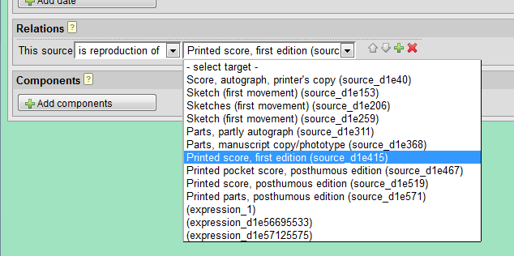
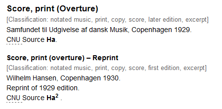

Adding a reprint edition to a source
A reprint is an unchanged reproduction of an earlier print. In FRBR
Functional Requirements for Bibliographic Records
as defined by the IFLA terms,
it is a new manifestation, related to the original one as being a reproduction.
Thus, to add a reprint edition in MerMEId,
- Create a new source
- Save your work and open the new source for editing
- Add a title or short description (simply "Reprint", for example)
- In "Relations" near the bottom of the page, select "is reproduction of" as the relation and the original
source as the target of the relation. In the target selection list, sources are identified both by title and their
ID attribute (if you want to see your sources' IDs, turn on "show ID" in the MerMEId settings menu or
use the attribute editor, which also can be activated in the settings menu).
 - Add any desired details about this reprint, such as publication date, publisher or plate numbers.
- Save your work and close the source editor.
In the HTML preview, the reprint will be displayed after the original source:

Please remember that relations are bidirectional. Depending on your project, you may want to define the relation also the other way (from the original, pointing to the reprint). To do this, open the original source for editing, add the relation "has reproduction:", and select the reprint source as its target. Note, however, that this reverse relation has no visible effect in MerMEId.